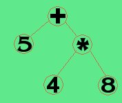

AAbbruchbedingung: Die Abbruchbedingung ist die Bedingung unter der eine Schleife abgebrochen wird. In den meisten Programmiersprachen wird hingegen immer das positive Kriterium angegeben. Als Denkhilfe ist die Abbruchbedingung allerdings hilfreich. Weiß man, unter welcher Bedingung eine Schleife abgebrochen werden soll, muß man das logische Gegenteil der Abbruchbedingung formulieren. Das ist manchmal (v.a. wenn viele logische Operatoren beteiligt sind), gar nicht so einfach. Wenn man es sich einfach machen will, kann man einfach ein logisches-Nicht (in den meisten Programmiersprachen ein vorangestelltes"!") davorsetzen. Will man es genau wissen, kann das De-Morgansche-Gesetz weiterhefen.
Adreßoperator:Der Adreßoperator ermöglicht die Ermittlung der Adresse einer Variablen im Speicher. Meistens wird diese Adresse (die man gedanklich auch als Verweis/Zeiger oder (englisch) Pointer auffassen kann) in ein Zeiger- oder Pointervariablen gespeichert, oder an eine Funktion übergeben. Unten ist eine Variable "ix" deklariert. Geben Sie "&ix;" ein, wird die Adresse zurückgegeben ! Die Adresse einer Variablen ist nicht änderbar ! "&ix=12;" oder ähnliches würde einen Fehler ergeben ! Adresswerte können speziellen Variablen, den Zeigervariablen zugewiesen werden. Um die Zeigervariable px mit der Adresse der Variablen ix zu initialisieren, geben sie ein: px=&ix;
Algorithmus: Eine Rechenvorschrift, die festlegt, wie Daten verarbeitet werden. Algorithmen können unabhängig von irgendeiner Programmiersprache formuliert werden. Beispiel: Schlage das Telefonbuch in der Mitte auf. Wenn der gesuchte Name einen kleineren Anfangsbuchstaben hat, so schlage den übriggebliebenen linken Teil in der mitte auf. Im anderen Fall verfahre entsprechend mit dem rechten Teil. Wenn der x-te Buchstabe gleich ist, dann vergleiche den nächsten Buchstaben. (Dieser Algorithmus nennt sich "divide and ?"
AND:AND ist ein logischer Operator der zwei boolesche Argumente miteinander verknüpft (ausführliche Erläuterungen). Zurückgegeben wird nur dann ein WAHR, wenn beide Argumente WAHR sind (in jedem anderen Fall ein FALSCH). In C und auch bei Struktor gibt es keinen booleschen Datentyp. Anstattdessen wird Integer oder Double verwendet. 0 entspricht dabei FALSCH. Jede andere Wert entspricht WAHR. Wahrheitstabelle:
a and b
a
WAHR
FALSCH
b
WAHR
WAHR
FALSCH
FALSCH
FALSCH
FALSCH
Argument: Beim Funktionsaufruf können bestimmte Parameter mit bestimmten Werten initialisiert werden. Diese Werte nennt man Argumente. Oft werden die Argumente mit den Parametern verwechselt. Zugegebenermaßen bezeichnen diese 2 Begriffe 2 Seiten derselben Medaille. Man kann sich das auch so versinnbildlichen: Die Felder eines Steuerformulars nennt man Parameter. Diese Felder sind für alle Formulare gleich. Das was man in die Felder jeweils reinschreibt nennt man Argumente.
Array: Ein Array oder auch Feld ermöglicht die Speicherung mehrerer "Variablen" in einer Art Liste. Über einen Index kann auf jedes Listenelement zugegriffen werden. In den meisten Programmiersprachen wird ein Array über den Namen und nachgestellte eckige Klammern dargestellt (z.B. budget[4]). Bei der Deklaration wird die Anzahl der Elemente angegeben. Bei der Verwendung im Programm gibt die Zahl in eckigen Klammern den Index an. (Ausführliche Erläuterungen)
Assembler: Als Assembler bezeichnet man eine Programmiersprache die fast eins zu eins einer Maschinensprache eines bestimmten Computertyps entspricht. Die doch etwas schlecht zu merkenden Zahlenkombinationen werden ersetzt durch kurze Begriffe (Mnemonics).
Ausdruck: zur Laufzeit berechenbare Rechnung. Man sagt (analog zur Funktion) ein Ausdruck gibt einen Wert zurück. Beispiele:
5
: ein Ausdruck mit dem Wert 5. Solche einfachen Ausdrücke nennt man Konstanten, sie sind konstant (gleichbleibend) und können deswegen auch schon bei der Programmierung berechnet werden.
( a + b ) *12
: Dieser Ausdruck beinhaltet zwei Variablen (eine Konstante, Klammern und zwei Operatoren) und gibt also folglicherweise je nach Wert der Variablen einen anderen Wert zurück (==> Der Wert des Ausdrucks kann erst zur Laufzeit bestimmt werden). Man könnte auch sagen, dieser Ausdruck besteht aus 3 Unterausdrücken (a, b, 12) die mit Operatoren verknüpft werden.
a = 5
: Auch eine Zuweisung kann ein Ausdruck sein. Der Wert dieses Ausdrucks ist 5. Man könnte (theoretisch) auch diesen Ausdruck in einer Schleife verwenden. Theoretisch kann man jeden Ausdruck im Programm zu einem Kommando machen, in dem man ein Semikolon anhängt. Das ist allerdings bei Ausdrücken die sonst nichts bewirken völlig nutzlos. Bei einer Zuweisung ist dies allerdings die Regel (da ja etwas im Speicher verändert wird). Man spricht bei solchen Ausdrücken auch von sog. Seiteneffekten (Nämlich die Veränderung eines Wertes im Speicher).
Alle Beispiele können unten nachvollzogen werden. Beachten Sie, daß Sie jedesmal ein Semikolon anhängen müssen !
BBasic: Eine Programmiersprache die vor allem für Anfänger konzipiert wurde. Berüchtigt durch die Verwendung von Goto. Erlebt in Form des objektorientierten Visual-Basic ein Revival.
Bedingung: Ein Ausdruck, der bei der Ausführung als WAHR oder FALSCH interpretiert wird. Wird vor allem bei Kontrollstrukturen verwendet um zu entscheiden, welche Befehle als nächstes ausgeführt werden sollen (Beispiel a > 5). siehe auch Logische Operatoren
Binäres System: Zahlensystem auf der Basis von zwei. D.H. es gibt nur 2 mögliche Zustände: 0 und 1 oder auch (WAHR (1) und FALSCH (0). Das binäre System ist Grundlage der Entwicklung jeglicher Rechenmaschinen überhaupt, da die oben genannten Zustände als "Strom an"(1) und "Strom aus"(0) umgesetzt werden können.
Binärbaum: Eine beliebte Methode Daten zu speichern. Ein Binärbaum wird dabei rekursiv definiert. Jeder Knoten beinhaltet die "Trägerdaten", kann einen linken und einen rechten Nachfolger haben der wierderum einen rechten und linken Nachfolger haben kann. Ein Knoten wird dabei durch einen Record (oder auch Struktur) definiert. Mathematische Ausdrücke lassen sich beispielsweise hervorragend in Binärbäumen speichern. Die Knoten speichern zusätzlich noch entweder einen Wert oder einen Operator. Beispiel: 5 + 4 * 8

Wie man Sieht ermöglicht das Speichern von mathematischen Ausdrücken in Binärbaumen die Beachtung von Vorrangsregeln (Punkt vor Strich).
Boolsche Algebra: System auf Basis des binären Systems. Beinhaltet 3 grundlegende Verknüpfungen: AND, OR und NOT. SIehe auch Bedingung, logische Operatoren
Break: Anweisung die in einer Schleife benutzt werden kann, um die Schleife abzubrechen. Fortgefahren wird im Gegensatz zu Continue mit dem ersten Element NACH der Schleife. (Innerhalb von Struktor: break;).
Breakpoint: Soviel wir "Stoppunkt". Breakpoints können für einzelne Zeilen im Quelltext (oder in Struktor bei den einzelnen Elementen) gesetzt werden um die Verarbeitung anzuhalten und die Variablenwerte zu überwachen oder das Programm Schritt für Schritt auszuführen.
CC (Sprache C): Maschinennahe aber doch hoch portable Programmiersprache, entwickelt von Kernigham und Ritchie in den 80er Jahren. Nach wie vor aktuell. C hat durch seine objektorientierte Erweiterung C++ nochmal Popularität geerntet.
call-by-reference: Art und Weise der Argumentenübergabe bei Funktionen. Bei call-by- reference wird eine Referenz der Variablen an die Funktion übergeben. D.h. innerhalb der Funktion kann direkt auf den Variablenwert zugegriffen werden. C verwendet im Gegensatz dazu call-by-value. Dabei kann aber call-by-reference durch die Verwendung von Pointervariablen "simuliert" werden.
call-by-value: Art und Weise der Argumentenübergabe bei Funktionen. Bei call-by-value wird nur der Wert der Variablen an die Funktion übergeben. D.h. daß innerhalb der Funktion nicht direkt auf den Variablenwert zugegriffen werden kann.
Cast: Datentypumwandlung. Beispiel: "(int)(4.5)". In diesem Fall wird der doublewert 4.5 in einen integerwert umgewandelt. Heraus kommt 4. Die Klammern um den zu castenden Ausdruck (in diesem Fall 4.5) sind nicht unbedingt nötig, werden aber üblicherweise trotzdem geschrieben. Struktor unterstützt 2 Castoperatoren: (int) und (double).
Character (char): Datentyp, der genau EIN Zeichen speichern kann. Bei der Zuweisung müssen einfache Hochkommata verwendet werden. (Beispiel: ca = 'f';). In C können auch Integerwerte von 0 bis 255 verwendet werden (ohne Hochkommata) die dann als Ascii-Werte interpretiert werden.
Compiler: Englisch für Übersetzer. Wandelt den Source-Code (Quelltext) in Maschinensprache um, die dann direkt auf dem Rechner ausgeführt werden kann. Resultat ist eine ".exe" Datei. Als Zwischenstadium entsteht temporär eine sog. Objektdatei. Eine andere Möglichkeit Programme auszuführen ist der Interpreter.
Continue: Anweisung die in einer Schleife benutzt werden kann, um die Schleife abzubrechen. Fortgefahren wird im Gegensatz zu Break mit der Überprüfung der Schleifenbedingung. Danach wird evtl die Schleife wierdeum ausgeführt. (Innerhalb von Struktor: continue;).
DDatentyp: bezeichnet den Typ von Daten. Folgende Grunddatentypen sind verbreitet:
Integer (int):
Speichert Ganzzahlen.
Float (float):
Fließkommazahlen mit einfacher Genauigkeit. Was einfache Genauigkeit eigentlich bedeutet kann recht unterschiedlich sein. Wird mittlererweile fast nicht mehr verwendet, da keine Speicherplatzprobleme mehr bestehen.
Double (double):
Der meistverwendete Datentyp für Fließkommazahlen.
Character (char):
Kann ein Zeichen in Form eines Ascii-Wertes speichern. Da Ascii-Werte auch nichts anderes als Integer-Werte mit einem Gültigkeitsbereich von 0-255 sind, lassen sich Charcters elegant vergleichen (Beispiel: 'a' < 'z' weil der Ascii-wert von a kleiner ist wie der von z).
String:
Eine Zeichenkette. Kann also mehrere Zeichen speichern. Wird meist durch ein Character Array implementiert.
Boolean:
Ein Wahrheitswert. Wird in C durch andere Datentypen ersetzt (so bedeutet z.B. das Ascii-Zeichen 0 gleichzeitig ein boolsches "falsch")
Bei jedem Datentyp gibt es einen Gültigkeitsbereich, der angibt von wo bis wo Werte erlaubt sind.
Debugger: Auf deutsch soviel wie "Entwanzer". Bug heißt Wanze. Der Begriff kommz daher daß einer der ersten Fehler auf eine Wanze zurückzuführen war, die die Vorläufer der Programmierer in ihren damals noch raumgroßen Computern zwischen den Röhren (Vorläufer des Transistors) gefunden hatten. Heutzutage wird damit ein Programm innerhalb der IDE bezeichnet, mit der man das Programm langsam Schritt für Schritt (step by step) nachvollziehen kann. Unverzichtbar ist beim "debuggen" die gleichzeitige Überwachung der Variablenwerte im Überwachungsfenster (was oft vergessen wird). Auch in Struktor können Sie Ihr Struktogramm "debuggen". Schalten Sie daür den "debug-Mode" ein und setzen Sie an beliebiger Stelle einen Breakpoint. Die Ausführung wird dann an dieser Stelle unterbrochen und Sie können über den Step-Button das Programm Schritt ür Schritt ausführen (nicht das überwachen der Variablen vergessen ;-)
Deklaration: Der Vorgang bei dem einer Variablen im Speicher Platz reserviert wird. Das heißt in den meisten Fällen noch nicht, das die Variable bereits mit irgendeinem Wert belegt wurde. Deswegen müssen alle Variablen nach der Deklaration aber vor der Verwendung initialisiert werden.
De-Morgan: Rechenregel für die Boolsche Algebra. Dabei gilt:
!(a && b) = !a || !b bzw.
!(a || b) = !a && !b
Beispiel: Nehmen Sie an, Sie programmieren eine Schleife, in der der Benutzer eine Zahl eingeben soll. Die Schleife soll abgebrochen werden, wenn die Zahl über 100 oder unter 50 liegt. Wie muß folglicherweise die Bedingung in der Schleife formuliert weden ? siehe auch: Abbruchbedingung , logische Operatoren , AND, #OR, NOT
Dereferenzierungsoperator: Operator der in Zusammenhang mit Pointervariablen verwendet wird. Zurückgegeben wird der Wert an der Adresse, die in der Pointervariablen gespeichert ist.
Dezimal: Zahlensystem auf der Basis von 10. Dabei gibt es folglich außer dem neutralen Element 0 noch 9 verschiedene Zeichen, die in einer Ordnungsrelation zueinander stehen (4 > 2). Sind alle Zeichen aufgebraucht gibt es einen Übertrag auf die nächste Stelle. Dieses Prinzip gilt auch für alle anderen Zahlensysteme mit dem Unterschied das mehr (z.B. hexadezimales System) oder weniger (z.B. oktales System) verwendet werden.
EEVA-Prinzip: Prinzip, das besagt, das zunächst alle Daten eingelesen werden sollten (Eingabe) bevor mit der Verarbeitung begonnen werden sollte. Nach der Verarbeitung kann dann die Ausgabe folgen. Dieses Prinzip ist recht eindeutig für einfache Fälle, sollte aber auch bei komplizierten Programmen auf allen Ebenen eingehalten werden.
FFIFO: Speicherprinzip. Abkürzung für "first in, first out". Im Deutschen auch als Puffer bezeichnet. Dazu gibt es meistens 2 Funktionen (man könnte Sie z.B. mit put und get bezeichnen) die einen Wert in den Puffer schieben, bzw. einn Wert dem Puffer entnehmen. Werden 5 Werte "gepusht" und danach einer "gegettet" so wird der erste gepushte Wert zurückgegeben. Puffer werden oft bei Dateioperationen oder in sog. Verbraucher/Erzeuger Situationen verwendet um die jeweiligen Operationen unabhängig voneinander ausführen zu können. siehe auch: LIFO
Flag: Englisch für Flagge. Der Begriff stammt ursprünglich von physischen Schaltelementen, die einen tatsächlichen ein-bit-breiten Ausgang hatten, der "Flagge zeigte" also eine logische 1 anlegte (man sagt auch das Flag wurde gesetzt) um irgendeinen Zustand zu "verkünden". Beispiele:
Ein Zählelement vekündet durch einen sog. überlauf-Flag, daß sein Speicherbereich überschritten wurde.
Ein Vergleichs-Flag in der CPU zeigt an, daß eine Vergleichsoperation soeben 2 gleiche Werte verglichen hat (die Werte also gleich sind)
In der Programmierung werden heutzutage noch ab und zu boolsche Variablen als Flag bezeichnet. Beispiel: Ein Ende-Flag in einer Sortierschleife zeigt an, daß das Sortieren nun beendet werden kann. (Natürlich muß das Flag auch selber gesetzt werden)
For-Schleife: spezielle kopfgesteuerte Schleife die in den meisten Fällen (aber nicht immer !) zum Zählen verwendet wird. Die For-Schleife kann in allen Fällen auch durch eine While-Schleife ersetzt werden. Es werden zwei Anweisungen im Schleifenkopf integriert. Zum einen das sog. Initialisierungskommando, mit dem Beispielsweise ein Zähler auf einen bestimmten Wert (z.B. 0) gesetzt wird. Zum anderen das Iterationskommando (zugegebenerweise meine eigene Wortschöpfung) das nachjedem Schleifendurchlauf ausgeführt wird. Die Syntax ist meist: (for(Init-kommando, Bedingung, iterativ-kommando){...} )
Funktion: Der Begriff "Funktion" wird in unterschiedlichen Programmiersprachen unterschiedlich definiert. In C wird die Funktion mit einem Unterprogramm gleichgesetzt. Hier wollen wir nun aber etwas differenzierter dran gehen. Eine Funktion kann eine oder mehrere Argumente besitzen die der Funktion übergeben werden. Mit diesen Argumenten berechnet die Funktion etwas und gibt einen Wert zurück. Beispiel: die fiktive Funktion addiere(3,7) gibt den Wert 10 zurück. Eine Funktion muß aber weder Argumente noch einen Rückgabewert besitzen (wenn auch eins von beiden in den meisten Fällen sinnvoll ist). Ein Beispiel für eine (hier immer fiktive) Funktion ohne Rückgabewert und Argumente wäre gib_begruessungstext_aus(). In Struktor können sowohl eigene Funktionen geschrieben werden, wie auch bereits vorhandene Funktionen benutzt werden. Bei der Beschreibung von Funktionen verwendet man eine spezielle Form. So gibt es in Struktor (bzw. in Java) die Funktion cos(double da). Dabei gibt das "double" in den Klammern den Datentyp an. Dies ist als Hinweis für den Benutzer der Funktion gedacht. Beim Aufruf innerhalb der Funktion darf der Datentyp nicht vorkommen (aber der Ausdruck muß dem Datentyp entsprechen). Dies ist ein häufiger Anfängerfehler.
Fußgesteuerte Schleife: Eine Schleife deren Bedingung am Ende der Schleife überprüft wird. D.H. das die Schleife in jedem Fall mindestens ein mal durchlaufen wird. jede Fußgesteuerte Schleife kann durch eine kopfgesteuerte Schleife ersetzt werden, indem man vor der Schleife dafür sorgt, daß die Bedingung WAHR ist. Dies sollte aber vermieden werden um für einen fremden Leser des Quelltextes deutlich klarzustellen, daß die Schleife mindestens einmal durchlaufen wird. Ein Besipiel wäre eine Abfrage, ob das Programm noch einmal ausgeführt werden soll.
GGlobale Variablen: Variablen deren Gültigkeitsbereich über alle Funktionen ausgeweitet wurde. Globale Variablen sollten möglichst vermieden werden, da Sie den "Namensraum verschmutzen". Programme mit evtl. hunderten globalen Variablen sind sehr schwer wartbar, weil der Programmierer immer aufpassen muß ob seine eigenen lokalen Variablen nicht vielleicht zufällig eine globale Variable "überdecken".
Aus diesen Gründen sind globale Variablen in Struktor nicht implementiert worden.
Goto: Ein Kommando, daß die Ausführung bei einer Sprungmarke fortsetzt. Der Schrecken jeder Person, die Programmtext im nachhinein nachvollziehen sollen. Man sagt daß der Goto-Befehl Spaghetti-Code produziert, der Programmtext also schwer nachzuvollziehen ist. Tatsache ist, daß jedes Programm, daß Goto-Befehle verwendet, auch ohne Goto-Befehle implementierbar ist. Recht praktisch ist allerdings die Verwendung von Gotos bei dem Abbruch von tief verschachtelten Schleifen. Dies läßt sich allerdings immer noch umgehen durch die Verwendung von Flags oder (in Struktor) die Verwendung von mehrstufigen Break- bzw. Continue-Anweisungen. Wollen Sie 2 inenandergeschachtelte Schleifen abbrechen, so können Sie dies in der inneren Schleife durch das Kommando break 2; tun.
Das Goto-Kommando ist in Struktor nicht implementiert worden.
Gültigkeitsbereich: Bereich in dem eine Variable gültig ist, also verwendet werden kann. Man unterscheidet grundsätzlich zwischen lokalen Variablen (die nur in einer Funktion erreichbar sind) und globalen Variablen.
HHezadezimal: Zahlensystem auf der Basis 16. Die im Vergleich zum dezimalen System fehlenden 6 Zeichen werden mit den Buchstaben a-f aufgefüllt. Übleicherweise wird bei der Angabe von Hexzahlen, um Verwechslungen zu vermeiden, ein kleines "x" vorne angestellt (manchmal wird auch vor deziamlzahlen ein kleines d vorne angestellt). Beispiele:
Initialisierung: Erstmalige Zuweisung eines Wertes. Nach der Deklaration hat eine Variable noch keinen definierten Wert. Sie muß vor der Verwendung initialisiert werden.
Interpreter: Ein Interpreter interpretiert zur Laufzeit jeden Befehl einzeln und führt ihn auf dem Rechner aus. Das hat zur Folge das das Programm ohne Interpreter nicht ausgeführt werden kann (im Gegensatz zum Compiler). Java ist beispielweise eine interpretierte Sprache (weswegen Sie auch vor der Verwendung von Struktor das Java-Runtime-Environment also den Java-Interpreter installieren mußten). Interpretierte Sprachen sind langsamer, sind aber (insofern ein Interpreter auf einer anderen "Zielmaschine" (also einer anderen Art von Rechner) vorhanden sind) portabler.
JJava: Eine objektorientierte interpretierte Programmiersprache von Sun, die auch in Web-Browsern ausgeführt werden kann (dort aber Einschränkungen unterliegt und z.B. keine Dateien lesen oder schreiben kann)
Java-Script: Eine Scriptsprache von Netscape. Hat außer einer ähnlichen Syntax nichts mit Java zu tun.
LLaufzeit: Der Zeitraum, indem ein Programm ausgeführt wird.
LIFO: Speicherprinzip. Abkürzung für "last in, first out", auch Stack oder Stapel (Die Assoziation mit einem Ablagestapel ist richtig) genannt. Dazu gibt es meistens 2 Funktionen (üblicherweise mit push und pop bezeichnet) die einen Wert auf den Stack schieben (immer als oberstes Element), bzw. einen Wert vom Stack entnehmen (immer auch nur das oberste Element). Werden 5 Werte "gepusht" und danach einer "gepopt" so wird der letzte gepushte Wert zurückgegeben. Stacks werden z.B. intern bei der Verwaltung des Speichers bei Funktionsaufrufen verwendet (rekursive Funktionen, die sich zu oft selber aufrufen, lösen beispielsweise einen Stack-Überlauf aus). siehe auch: FIFO
Logische Operatoren: Operatoren die logische-/boolsche Werte miteinander verknüpfen. Die logischen Grundoperatoren sind AND, OR und NOT. Alle anderen Operatoren (beispielsweise XOR) können aus den Grundoperatoren zusammengestzt werden.
MNNOT: logischer Verneinungsoperator. Wird in den meisten Programmiersprachen mit einem vorangestelltem "!" ausgedrückt. Der Ausdruck wird verneint. Ist beispielsweise a=14 so gibt der logische Ausdruck !(a>0) den Wert FALSCH zurück. Die Wahrheitstabelle:
a
WAHR
FALSCH
!a
FALSCH
WAHR
OOktal: Zahlensystem auf der Basis 8. 8 wie auch 16 sind Potenzen von 2 (binäres System) und insofern für den Rechner einfacher vom binären System "umrechenbar" als in das Dezimale System. Üblicherweise wird bei der Angabe von Oktalzahlen, um Verwechslungen zu vermeiden, ein kleines "o" vorne angestellt (manchmal wird auch vor dezimalzahlen ein kleines d vorne angestellt). Beispiele:
1
2
8
10
11
16
17
18
64
100
256
o1
o2
o10
o12
o13
o20
o21
o22
x80
o124
o320
OR: Logischer Operator, der nur dann FALSCH zurückgibt wenn beide verknüpfte Ausdrücke FALSCH sind. Wahrheitstabelle:
PParameter: Parameter sind Variablen in Funktionen die mit dem Aufruf der Funktion mit den Aufrufargumenteninitialisiert werden. Die Parameter werden bei den meisten Programmiersprachen in der Definition der jeweiligen Funktion in Klammern mit dem jeweiligen Datentyp angegeben. Beispiel (in C):
int addiere(int a, int b) {...}
Der Datentyp vor der Funktion entspricht dem Datentyp des Rückgabewertes. Hier wird also bei einem Aufruf der Funktion addiere(4,8) a mit 4 und b mit 8 initialisiert.
Pointer: Der Begriff wird oft unscharf verwendet. Zum einen bezeichnet er eine Adresse im Speicher. Zum anderen wird eine Variable die eine Adresse speichert als Pointer bezeichnet. Mithilfe dieser Adresse kann der Inhalt an der Adresse verändert werden. Da die Werte aller Variablen im Speicher abgelegt werden, kann also über diese Ardesse der Wert einer Variablen verändert werden. Das ist recht praktisch wenn der Name der Variablen zur Zeit (vgl. call-by-value) auuserhalb des Gültigkeitsbereichs liegt. Deswegen werden oft beim Aufruf Adressen als Argumente bei Funktionsaufrufen verwendet. Auch bei der variablen Speicherallokierung und in Zusammenhang damit bei Speicherstrukturen wie verkettete Listen oder Binärbäumen sind Pointer ein unverzichtbares Mittel. siehe auch: Adressoperator , Dereferenzierungsoperator
Pointerarithmetik: Mit Adressen kann auch gerechnet werden. Liegen beispielsweise 10 Integerwerte im Speicher hintereinander, und weiß man die Adresse des ersten Wertes und wieviel Byte eine Integervariable im Speicher benötigt, kann auch die Adresse des fünften Integerwertes im Speicher berechnet werden. Auf diese Art und Weise werden in der Sprache CArrays bzw. Felder verwaltet. Damit die Rechnung nicht zu kompliziert wird, unterscheidet man die Adressen bezüglich des Datentyps desjenigen Wertes, der an der Adresse liegt. Man würde im obigen Beispiel also von einem Zeiger auf Integer sprechen. Addiert man zu der Adresse des ersten Integerwertes den Wert 1 hinzu, so werden in Wirklichkeit die Anzahl der Bytes hinzuaddiert, die ein Integerwert im Speicher benötigt. Auf diese Weise vereinfacht sich die Pointerarithmetik.
Portabilität: Ein Programm muß (sofern es nicht für einen Interpreter geschrieben wurde) vor dem ausführen compiliert werden. Das resultierende Maschinenprogramm läuft nun nur auf diesem Computertyp. Gibt es den Compiler auch auf anderen Computertypen, könnte man das Programm auch auf andersartigen Computern zur Ausführung bringen. Dies hängt aber entscheidend davon ab, ob das Programm Maschinenunabhängig programmiert wurde. Man spricht auch von der Portabilität eines Programms. Die Sprache C eignet sich z.b. sehr gut für maschinenunabhängiges Programmieren, was aber nicht heißt, das jedes Programm in C auch portabel ist.
Pseudocode: Man kann das, was ein Programm tut auch eher allgemein beschreiben (also unabhängig von einer bestimmten Sprache). Dies könnte man in einer hypothetischen einfach zu verstehenden aber doch programmiernahen Sprache tun. Solche Sprachen nennt man Pseudocode. Es gibt meines Wissens keine Standardisierten Pseudocode-Sprachen (was ja im Prinzip auch unnötig wäre). Wichtig beim Pseudocode ist hingegen, das möglichst viele Programmierer (die vielleicht in unterschiedlichen Programmiersprachen programmieren) verstehen, was das Programm tut. Beispiel:
Rekursion: Rekursion eine Methode mit der bestimmte Probleme besonders elegant gelöst werden können. Dabei ruft sich eine Funktion selber auf. Damit das zu keinem Absturz führt, muss ähnlich wie bei einer Schleife vorher eine Bedingung geprüft werden. Programmieranfänger haben meistens gerade bei der Rekursion Probleme das Konzept voll zu erfassen. Beispiele für Rekursion sind unter "Beispiel" abrufbar.
Repeat: Auf Deutsch soviel wie "wiederhole". Wird als Schlüsselwort z.b. in Pascal verwendet und hat dort eine ähnliche Bedeutung wie die Schleife.
Rückgabewert: Der Wert, der von einer Funktion zurückgegeben wird (wenn diese Funktion überhaupt einen Wert zurückgibt). Dieser Rückgabewert wird durch den Funktionsaufruf selber repräsentiert. Geben Sie z.b. unten den Ausdruck "cos(5);" ein. so wird der Rückgabewert dieser Funktion (nämlich der Kosinus von 5) zurückgegeben.
SSchleife: Überbegriff für for-Schleife, kopf- und fußgesteuerte Schleife. Ein Kontrollkonstrukt bei dem der Code innerhalb der Schleife öfters ausgeführt wird. Jede Schleife braucht eine Bedingung um zu überprüfen ob der Code nochmal ausgeführt wird. Diese kann vor (im Kopf) oder nach der Schleife (im Fuß) überprüft werden.
Speicher: Hmmm. Schwer zu eklären ;-). Damit ist in der Programmierung meistens der Hauptspeicher gemeint. Also der Speicher dessen Inhalt verlorengeht, wenn der Stom abgeknippst wird. Auf den Speicher greift man lesend (z.b. "a;") oder schreibend (z.B. "a=5;") zu und dies über Variablen oder über Zeiger.
Speicherallokierung: Allokation heißt soviel wie Belegung. Normalerweise deklariert man Variablen dann wenn man ein Programm schreibt. Es gibt aber sehr viele Programmierprobleme die damit nicht gelöst werden können. Ein Textverarbeitungsprogramm braucht z.b. für kleine Texte weniger Speicher als für Griße. Also muss es eine Möglichkeit geben, inn derhalb der Laufzeit eines Programmes Speicher zu belegen. Dies funktioniert in C und in Struktor über eine Funktion der man in den Argumenten mitteilt wieviel Speicher man haben möchte und die dann einen Zeiger auf den Anfang des Speicherbereichs zurückgibt
String: Zeichenkette. Es werden also Zeichen hintereinandergehängt um z.B. einen Personennamen oder ähnliches in dem String zu speichern. Strings sind in C kein elementarer Datentyp sondern ein Array aus Zeichen (Character).
Struktur: Zusammenfassung von mehr als einer Variable die dann wiederum wie eine Variable behandelt werden kann. Ein typisches Beispiel wären die Personendaten einer Person wie Name, Vorname, Adresse usw. In Struktor noch nicht implementiert. Eine sehr praktische Angelegenheit.
Until: Das zweite zugehörige Schlüsselwort zu "repeat" nach der üblicherweise die Bedingung folgt. heißt soviel wie "bis" also heißt "repeat ... until [Bedingung]" soviel wie "wiederhole ... bis [Bedingung]".
VVariable: In Variablen können Werte gespeichert werden. Variablen befinden sich im Speicher.
Verkettete Liste: Da man oft im vorhinein nicht weiß wieviel Speicherplatz ein Programm braucht, muß man den Speicherplatz zur Laufzeit anfordern (Speicherallokierung). Innerhalb dieses angeforderten Speichers könnte man nun die Daten in Form einer verketteten Liste Speichern. Jedes Element der Liste ist dabei eine Struktur in der die Nutzdaten (z.B. Characters) untergebracht sind und ein Zeiger auf das nächste Element der Liste. Auf diese Art kann man die Liste von vorn nach hinten abklappern, Elemente löschen oder hinzufügen ... WWatchlist: In der Watchlist können beim debuggen diejenigen Variablen eingegeben werden, die einen interessieren. Auf diese Art können Fehler (bugs) leichter gefunden werden.
XXOR: Logischer Operator, der dann WAHR zurückgibt wenn entweder das Eine oder das andere Argument WAHR ist (Exklusives Oder). Wahrheitstabelle: